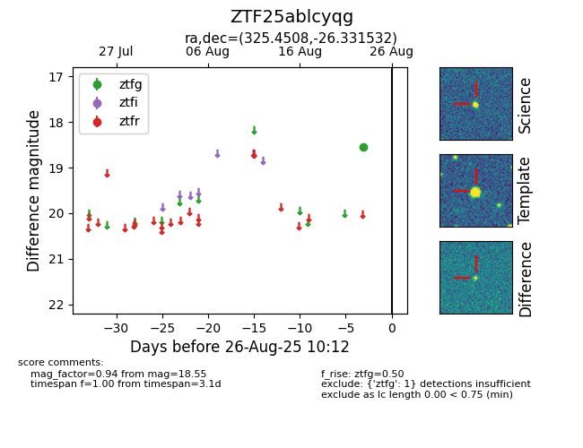

Target ZTF25ablcyqg at 2025-08-26 10:12, see:
FINK: fink-portal.org/ZTF25ablcyqg
Lasair: lasair-ztf.lsst.ac.uk/objects/ZTF25ablcyqg
ALeRCE: alerce.online/object/ZTF25ablcyqg
alt names
ZTF25ablcyqg (ztf,fink)
coordinates:
equatorial (ra, dec) = (325.4508,-26.33153)
galactic (l, b) = (22.7762,-47.90854)
photometry
last ztfg=18.55
1 ztfg detections
